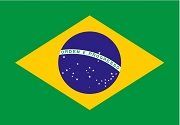

About Me
My name is Adam and I’m 26 years old. I live in Brazil and I'm originally from São Paulo. I have been a student of Information Technology for over four years and I’m passionate about becoming a software developer. I love spending time with my family and friends. I’m a huge fan of motorsports and music. I have been a member of the church since I was born. I enjoy learning new things and growing both personally and professionally.
São Paulo, Brazil
Brazil is the largest country in South America and the fifth-largest in the world by area. It is famous for its rich culture, natural beauty, and biodiversity. The Amazon Rainforest, which covers a large portion of Brazil, is home to countless plant and animal species found nowhere else on Earth. Brazil is also well known for its music (such as samba and bossa nova), its football (soccer) legacy, and vibrant festivals like Carnival. São Paulo, where I’m from, is the largest city in Brazil and a major center for business, culture, and technology in Latin America.
